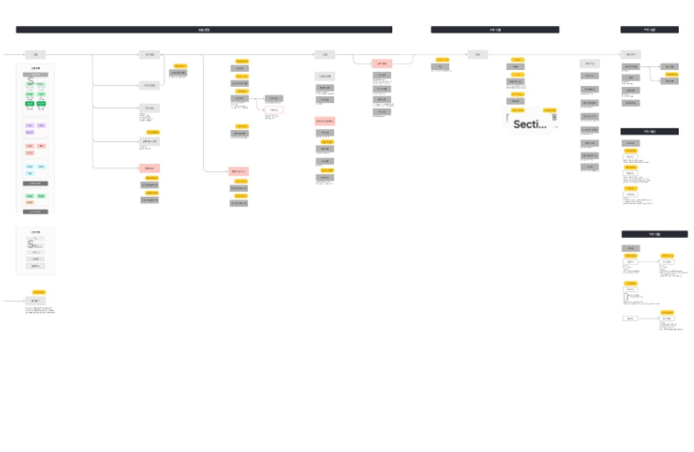
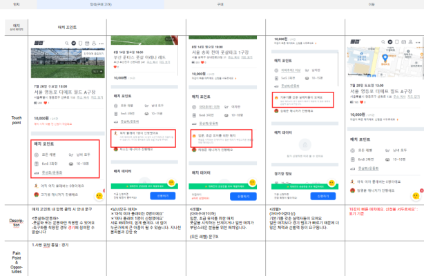
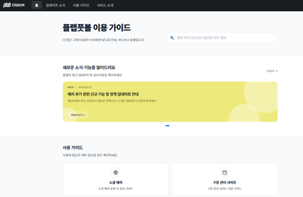
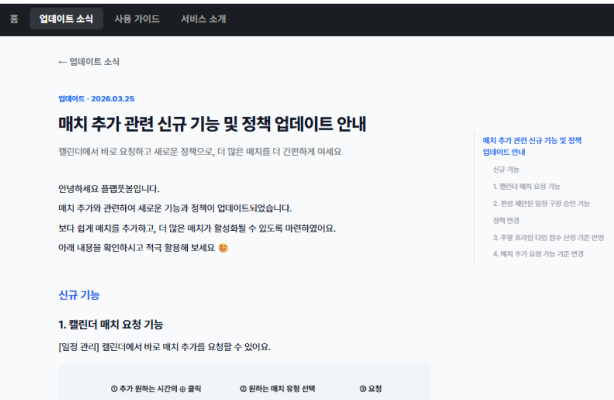

LLM 기반 VOC 자동 분류 및 실시간 모니터링 구축
여러 채널에 흩어진 VoC를 구조화해
의사결정 속도를 높이는 실시간 파이프라인을 구축하였습니다.
VoC는 꾸준히 수집되고 있었지만 여러 채널에 흩어져 있고, 단순 누적 수준에 머물러 있었습니다. 따라서 사내 합의를 이끌어 실제 서비스 기능 개선으로 이어지기 어려웠습니다.
- 분석 및 인사이트 도출
TextRank 기반 요약과 LLM 보조 분류를 통해 주요 불만·제안 패턴을 정량화하였습니다. - 개선 연계
시설·매니저·시스템 오류 등 각 분야 다빈도 VoC 항목을 서비스 개선 프로젝트로 연결하였습니다. - VOC 데이터 구조화
Google Sheets와 SQL을 활용해 흩어진 VoC 데이터를 통합 관리하고, 분석 가능한 형태로 정리하였습니다.
- 주 평균 860건의 VoC를 분석해 442개 신규 티켓 도출 및 50건 완료, 7개 개선 진행 중
- AI를 활용한 검수 프로세스 도입으로 검증 속도와 운영 효율 개선
리뷰에서 반복적으로 드러나는 문제를 놓치지 않기 위해 세밀하게 분석하고, 실제 개선까지 연결해왔습니다. 과정 속에서 '완벽한 정리'에 집중하면 실행이 늦어질 수 있다는 점을 깨달았습니다. 이후에는 핵심을 빠르게 구조화하고, 실행을 통해 검증하며 완성도를 높이는 방식을 익혔습니다.
라미는 이번에 협업하는 업무가 많아졌는데, 그만큼 라미의 강점이 더 잘 드러났다고 생각해요. VOC를 꼼꼼하게 수집하고, 분석하고, 정리하고, 전달하는 과정에서, 놓칠 수 있는 부분까지 하나하나 잘 챙기는 모습을 보여줬습니다. 그런 점들이 정말 인상적이었어요.
터치포인트 전수 점검 및 개선 과제 구조화
핵심 유저 저니를 전 구간 해체하고
모든 터치포인트의 병목을 진단·구조화하였습니다.


고객 여정을 정리한 문서가 없어 각 부서가 단편적인 경험에 의존해 업무를 처리하여 동일한 이슈가 반복되고 고객 경험의 일관성이 떨어졌습니다.
-
고객 핵심 여정 지도 제작
소셜 매치, 구장 예약, 팀 서비스 등 제공하는 각 서비스 이용 절차 정리를 통해 서비스 이용 과정 점검 및 내부 구성원들의 서비스 이해도를 향상하였습니다. -
터치포인트 전수 정리
사용자가 서비스를 이용하며 확인하는 화면(터치포인트) 정리를 통해
개선 필요 사항을 도출하고 업무 효율성을 향상하였습니다.
- 프로세스 개선안 14건 제안 및 9건 반영
- 내부 구성원들의 서비스 디테일에 대한 이해도 및 신규 입사자 온보딩 속도 향상
- 서비스 이용 단계별 UI · 알림톡 · 이동 경로 등을 문서화한 터치포인트 통합 관리로 CX 대응 효율 극대화
고객 여정을 단계별로 분해하고 핵심 터치포인트를 시각화함으로써, 여러 팀이 각자 보던 문제를 하나의 흐름 속에서 바라볼 수 있게 만들었습니다.
라미는 보이지 않는 CX를 책임져요. 사실 크게 드러나지 않을 수 있는 영역이라 조급함, 어려움이 많을 것이라고 생각하는데 묵묵히 좋은 퀄리티로 달성해가는 모습은 귀감이 되고 저를 반성하게 돼요.
구장주 대상 정책 가이드 사이트 제작
반복 문의를 줄이기 위해 No-Code 툴로
구장주 통합 안내 사이트를 자체 구축하였습니다.
(1월 → 9월)
(1년간)


구장주 문의가 지속적으로 증가했지만, 안내 경로가 명확하지 않아 동일한 문의가 반복 발생했습니다. 더불어 계속적으로 증가하는 제휴 구장 수로 인해 커뮤니케이션 비용 등 리소스 확대로 이어졌습니다.
- 2024년 내 피리어드 간 평균 83% 증가하는 문의 수 방지를 위해 구장주 통합 안내 경로를 신설하였습니다.
- 신규 제휴 시 서비스 이해를 위해 필요한 기초 내용부터 구장주 전용 사이트 이용 방법, 서비스 업데이트, 최근 공지 소식을 한곳에 통합 게시하였습니다.
- 2025년 1월 대비 9월 일평균 방문자 수 114% 증가
- 1년간 상담 문의 수 43% 감소
감으로만 남아 있던 아이디어를 데이터로 검증하여 이 행동이 효과가 있다는 확신을 만들었고, 그 근거를 바탕으로 실행하여 실제 성과로 연결하였습니다.
항상 본인의 업무를 꼼꼼히 해요. 이번에 맡은 구장주 가이드는 내용이 깔끔하고 한눈에 잘 정리되어 있어서 인상 깊었어요. 그러한 경험들이 플랩의 서비스에 잘 녹아든다면 좀 더 유저들의 진정성을 끌어들일 수 있는 서비스로 발전이 되지 않을까 합니다.
브랜드 라이팅 가이드 설계 및 조직 내재화
팀마다 제각각이던 표현 방식을 통일하여
브랜드 언어의 일관성을 조직 전반에 정착시켰습니다.
각 팀이 제각각의 표현과 어조로 고객과 소통해 브랜드 메시지의 일관성이 무너지고, 전달 방식이 혼재되어 있었습니다.
- 회사의 MVC 모델을 기반으로 라이팅 원칙을 수립하였습니다.
- 원칙의 원활한 적용을 위한 라이팅봇을 자체 제작하였습니다.
- 안내문·가이드·캠페인 등을 전수 점검하여 브랜드 일관성을 확보하였습니다.
- 라이팅이 브랜드 경험과 일관성에 미치는 영향에 대해 조직 전반에 인식 확산
- 브랜드 메시지 톤 통일로 고객 커뮤니케이션 일관성 강화
- 11건의 라이팅 검수 요청 확인 및 실질적인 업무 기준으로 정착시키는 데 기여
무형의 브랜드 가치를 언어로 정립하는 것뿐 아니라, 누구나 가이드를 쉽게 적용하도록 사용 방식까지 설계하는 일이 핵심이었습니다. 가이드를 문서로 남기는 데서 끝나지 않고, 실무 적용까지 연결되었을 때 비로소 브랜드의 언어가 완성된다는 걸 확인했습니다.
CX팀뿐만 아니라 구장 관리 사이트의 구장주 가이드 메인 담당자, 라이팅, 매거진 등 다양한 분야에서 라미의 영향력이 확장되고 있다고 느껴집니다. 그 부분은 CX팀의 확장이라고도 생각돼요.
작은 디테일을 관리해
경험의 완성도를 높입니다.
VoC와 데이터를 기반으로
고객 문제의 본질을 발견합니다.
복잡한 고객 여정을 구조화해
더 나은 경험 흐름을 설계합니다.
분석에 머무르지 않고
실행으로 개선을 만듭니다.
문제 정의부터 해결까지
완결합니다.
고객의 목소리를
조직의 언어로 바꾸겠습니다
고객의 말 속에서 패턴을 발견하고, 개선 과제로 구조화해 제품 조직이 실행할 수 있는 근거로 만들겠습니다.
Customer Experience Team의 일원으로서 PO · 개발자 · 디자이너와 함께 고객 경험을 제품 성장의 근거로 만들겠습니다.
아이디어를 데이터로 검증하고, 필요한 시스템은 직접 설계해 실행으로 연결하겠습니다. 분석에 머무르지 않는 CX가 되겠습니다.
안내문 한 줄, 알림 한 문장까지 브랜드 경험으로 만드는 라이팅 기준을 토스뱅크 안에 세우겠습니다.